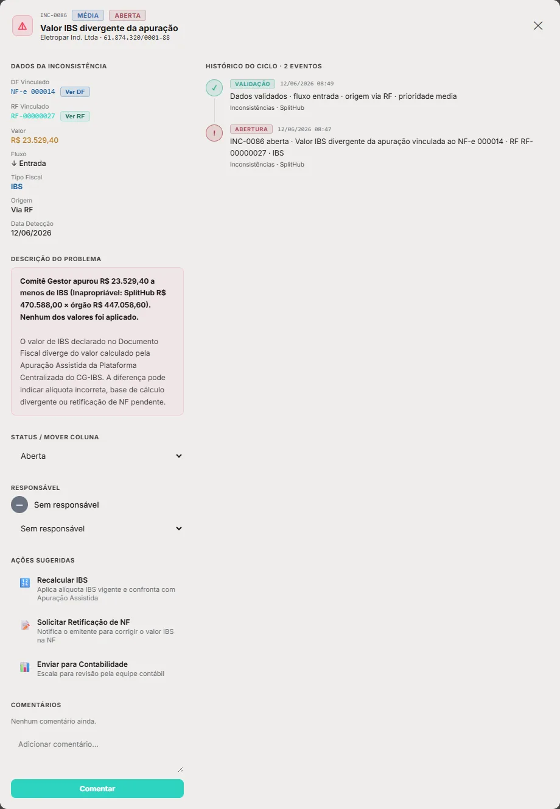
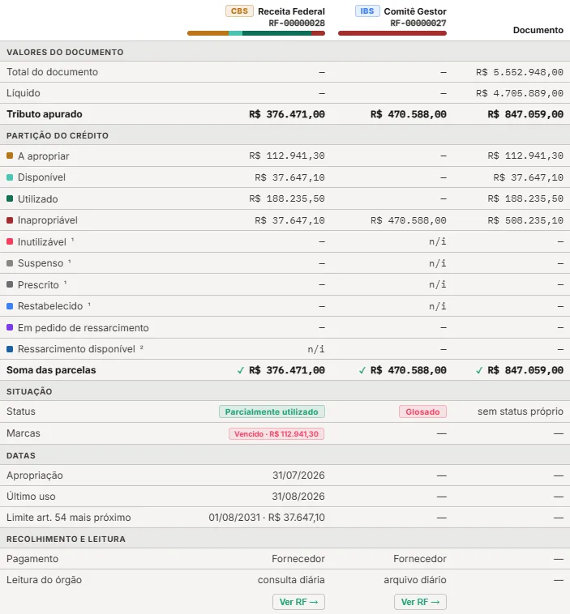

A inconsistência passa a oferecer, como ação ou como caminho de resolução, a emissão de um evento fiscal da Reforma para ajustar o documento. O SplitHub prepara o evento e o solicita por webhook; o sistema do cliente transmite; o evento autorizado volta pela API. Cada ajuste de valor ou de atributo fica registrado, com trilha completa, e aparece na decomposição de valores do documento e do registro fiscal.
Hoje a inconsistência aponta o problema e sugere ações genéricas — recalcular, pedir retificação, escalar para a contabilidade. Nenhuma delas corrige o documento perante a Receita Federal e o Comitê Gestor. Na Reforma, boa parte das correções é feita por evento fiscal: aceitar uma nota de crédito, pedir o crédito presumido, declarar perecimento, atualizar a previsão de entrega.
A proposta liga as duas coisas. Da inconsistência, o analista escolhe o evento que corrige o documento; o SplitHub monta o evento com o que já sabe do documento, mostra o efeito antes de pedir, envia a solicitação ao sistema do cliente e acompanha até o órgão refletir. O documento guarda cada ajuste, com quem pediu, quem aprovou, o protocolo e o antes e o depois.
Em 14/09/2026 ficou decidido que o SplitHub não emite evento: quem transmite é o sistema do cliente, que tem o certificado, a fila e a responsabilidade pela declaração. Esta proposta mantém isso. O que muda é a origem: o SplitHub passa a preparar e solicitar o evento, pelo webhook fiscal_event.requested, e o sistema do cliente decide, transmite e devolve o resultado. A revisão do papel é a D-01.
| Antes | Com a proposta |
|---|---|
| Ação sugerida genérica, sem efeito no documento | O evento que corrige o documento, sugerido pelo tipo da inconsistência e pelo papel do cliente no DF |
| O ERP emite evento por conta própria, e o SplitHub só sabe quando importa | O SplitHub pede, o ERP transmite, e a solicitação liga o evento à inconsistência que o motivou |
| Valor do documento muda sem registro do porquê | Cada ajuste é um registro imutável, com origem, antes e depois, e a trilha inteira |
| A decomposição de valores mostra só o estado atual | A decomposição lista os ajustes e as mudanças de atributo, com o valor original ao lado |


As telas T-01 a T-06, na seção 09: a ação de evento no card, o formulário com a prévia do efeito, o acompanhamento da solicitação, os ajustes na decomposição de valores, a trilha de um ajuste e a configuração.
Só os eventos da Reforma — os dezesseis da NT 2025.002-RTC, descritos na referência de eventos. Quem pode registrar cada um depende do papel do cliente no documento, e é isso que filtra a lista.
| Código | Evento | O cliente pode solicitar quando | O que muda no documento |
|---|---|---|---|
| 211110 | Solicitação de apropriação de crédito presumido | é o adquirente; também como emitente, quando a informação não entrou na nota | Valor e atributo: o crédito do item passa a ser o presumido, e a origem do crédito, “presumida” |
| 211124 | Perecimento, perda, roubo ou furto — transporte FOB | é o adquirente | Valor: estorna o crédito do item na quantidade perdida |
| 211128 | Aceite de débito por emissão de nota de crédito | é o adquirente | Valor: com aceite, reduz o valor e o crédito pelo montante da nota de crédito |
| 211130 | Imobilização de item | é o adquirente | Atributo: o item fica marcado como imobilizado, e o prazo do ressarcimento passa a ser o do imobilizado |
| 211140 | Apropriação de crédito de combustível | é o adquirente | Valor: o crédito passa a ser pela quantidade consumida |
| 211150 | Apropriação de crédito de bens e serviços vinculados à atividade | é o adquirente | Valor: constitui o crédito condicionado do item |
| 112110 | Informação de efetivo pagamento integral | é o emitente — documento de saída | Atributo: pagamento integral informado, o que libera o crédito presumido do adquirente |
| 112120 | Importação em ALC/ZFM não convertida em isenção | é o emitente — documento de saída | Valor: tributa o item declarado |
| 112130 | Perecimento, perda, roubo ou furto — transporte CIF | é o emitente — documento de saída | Valor: estorna na quantidade perdida |
| 112140 | Fornecimento não realizado com pagamento antecipado | é o emitente — documento de saída | Valor: desfaz o débito e o crédito do não fornecido |
| 112150 | Atualização da data de previsão de entrega | é o emitente — documento de saída | Atributo: nova previsão de entrega, que desloca a competência |
| 110001 | Cancelamento de evento | é o autor do evento a cancelar | Desfaz os ajustes do evento cancelado com ajustes inversos |
| Fora do fluxo | Por quê |
|---|---|
| Eventos do outro lado do documento — por exemplo, o 112130 num documento de entrada | Quem registra é o fornecedor. A ação vira pedido ao emitente: o chamado vai para aguardando emitente, com o evento esperado registrado |
| 212110 · 212120 — manifestação da sucessora | Dependem de uma sucessão empresarial, que não nasce de inconsistência de documento |
| 412120 · 412130 — manifestação do Fisco | São do órgão: só chegam, pela importação |
Os eventos 112120, 112130, 112140, 211110, 211124, 211130, 211140 e 211150 levam o número do item. Como a ingestão da primeira versão não separa itens, o analista informa o item e os valores dele no formulário, conferindo com o XML; o ajuste é registrado no registro fiscal do tributo, por valor. O item fica na trilha (D-06).
O produto sugere, e o analista escolhe. A sugestão vem do tipo da inconsistência e do papel do cliente no documento; qualquer evento que o cliente possa registrar naquele documento pode ser escolhido, com justificativa.
| Inconsistência | Documento | Evento sugerido | Quando faz sentido |
|---|---|---|---|
| BValor IBS ou CBS divergente da apuração | Entrada | 211128 | O fornecedor emitiu nota de crédito e falta o aceite do adquirente |
| Entrada | 211110 | Compra que dá crédito presumido, e o órgão apurou o destacado | |
| Entrada | 211124 | Mercadoria perdida em transporte por conta do adquirente | |
| Entrada | pedir 112130 ou 112140 ao emitente | A perda ou o não fornecimento é do lado do fornecedor | |
| BMovimento do órgão sem contrapartida | Entrada ou saída | 110001 | O movimento vem de um evento do próprio cliente registrado por engano |
| BDF sem registro na apuração assistida | Saída | 112150 | A entrega foi adiada e a competência mudou |
| CPrazo de apuração expirado | Saída | 112150 | A previsão de entrega ficou desatualizada |
| DReconhecido diferente do pago | Saída | 112110 | O cliente recebeu o pagamento integral e não informou |
| BApropriação não pedida — crédito condicionado | Entrada | 211150 · 211140 | Crédito vinculado à atividade ou de combustível que nunca foi pedido |
Na proposta de gestão de inconsistências, emitir o evento é uma ação do responsável, em em análise. Enquanto o sistema do cliente transmite e o órgão não reflete, o chamado fica em aguardando emitente, com o terceiro registrado — o sistema do cliente e, depois, o órgão de cada tributo. O relógio de resolução pausa. Quando o órgão reflete o evento e a divergência some, o desfecho vem preenchido com o evento e o protocolo, e o responsável fecha o chamado.
fiscal_event.requested ao sistema do cliente.| Estado da solicitação | Quando | O que o chamado mostra |
|---|---|---|
| rascunho | O formulário foi aberto e não enviado | — |
| aguardando aprovação | Evento que muda valor, à espera do aprovador | Ação pendente |
| solicitada | Webhook enviado; o SplitHub espera a entrega | Aguardando emitente · sistema do cliente |
| entregue | O sistema do cliente respondeu 2xx ao webhook | Aguardando emitente · sistema do cliente |
| autorizada | O evento voltou com protocolo | Aguardando emitente · Receita Federal ou Comitê Gestor |
| rejeitada | O sistema do cliente devolveu a rejeição | Volta a em análise, com o motivo |
| cancelada | Cancelada antes da transmissão, por quem pediu ou pelo aprovador | Volta a em análise |
| sem retorno | Nenhum resultado em 24 horas | Aviso ao responsável; em 72 horas, inconsistência de integração (D-09) |
Em 22/10/2026 ficou decidido que só a Conciliação grava movimento de valor, a partir do dado do órgão (C-01). O evento autorizado é a declaração do cliente; o órgão é quem confirma. Por isso o ajuste de valor nasce aguardando o órgão e só move a partição quando a Receita Federal, para a CBS, ou o Comitê Gestor, para o IBS, refletir. Se o órgão refletir um valor diferente do declarado, nada é aplicado sozinho: abre inconsistência, como decidido em 30/09/2026.
O canal segue o padrão dos webhooks da API pública: inscrição em /v1/webhook-subscriptions, assinatura HMAC-SHA256 sobre o carimbo de tempo e o corpo, entrega pelo menos uma vez, até dez retentativas e log em GET /v1/events. Os nomes seguem a decisão de 05/10/2026: contrato em inglês.
| Tipo | Quando sai | Quem consome |
|---|---|---|
fiscal_event.requested | A solicitação foi aprovada — ou não precisava de aprovação | O sistema do cliente que transmite eventos — ERP ou emissor fiscal |
fiscal_event.request_canceled | A solicitação foi cancelada antes de qualquer resultado | O mesmo sistema, para não transmitir |
POST https://erp.cliente.com.br/splithub/eventos
X-Splithub-Timestamp: 1793050000
X-Splithub-Signature: v1=…
{
"id": "evt_7d2a90",
"type": "fiscal_event.requested",
"created_at": "2026-10-26T14:00:00Z",
"data": {
"request_id": "fer_01h2",
"fiscal_document_id": "df_184221",
"access_key": "4126…0001",
"event": {
"type": "credit_note_acceptance",
"code": "211128",
"author_cnpj": "54891237000148",
"detail": { "acceptance": 1 }
},
"expected_effect": [
{ "tax": "IBS", "field": "credit_amount", "from": "2000.00", "to": "1800.00" },
{ "tax": "CBS", "field": "credit_amount", "from": "1000.00", "to": "900.00" }
],
"inconsistency_id": "INC-000412",
"requested_by": "maria.costa@induspar.com.br",
"approved_by": "jose.silva@induspar.com.br",
"respond_by": "2026-10-27T14:00:00Z"
}
}O event usa o mesmo envelope da importação de eventos proposta em 30/09: type legível decide o formato de detail, que espelha o detEvento da NT. O sistema do cliente não precisa traduzir nada: monta o XML a partir do mesmo dado que já usaria.
| Método | Rota | Para quê | Resposta |
|---|---|---|---|
| POST | /v1/fiscal-events | Importar o evento autorizado, com o protocolo e o request_id da solicitação — a mesma rota de importação de eventos, que ganha o campo | 202 |
| POST | /v1/fiscal-event-requests/{id}/rejection | Devolver a rejeição do ambiente autorizador, com o código e o motivo | 200 |
| GET | /v1/fiscal-event-requests | Listar solicitações por situação — o caminho para quem prefere buscar a receber | 200 |
| GET | /v1/fiscal-event-requests/{id} | Uma solicitação, com o efeito esperado e o resultado | 200 |
| Regra | Por quê |
|---|---|
O request_id é a chave de idempotência do lado do cliente | Webhook é entregue pelo menos uma vez: o mesmo pedido pode chegar duas vezes |
Evento autorizado sem request_id continua sendo aceito | O ERP segue podendo emitir por conta própria; o SplitHub só não liga o evento a uma inconsistência |
| Evento autorizado com efeito diferente do esperado é aceito e sinalizado | O que vale é o que foi autorizado; a diferença abre inconsistência para análise |
| Solicitação cancelada que mesmo assim volta autorizada é aceita e sinalizada | O evento existe no ambiente autorizador; o SplitHub registra e avisa |
Cada mudança que um evento causa no documento é um ajuste: um registro próprio, imutável, que diz o que mudou, de quanto para quanto, por quê e por ordem de quem. Um evento pode gerar vários ajustes — um por tributo e um por atributo.
| Campo do ajuste | Exemplo |
|---|---|
| Documento e registro fiscal | NF-e 000.184.221 · RF de IBS |
| Alvo | Valor do crédito · ou atributo, como a previsão de entrega ou a origem do crédito |
| Antes e depois | R$ 2.000,00 → R$ 1.800,00 |
| Origem | Evento 211128, protocolo, solicitação fer_01h2, inconsistência INC-000412 |
| Pessoas | Pedido por Maria Costa; aprovado por José da Silva |
| Datas | Solicitado, entregue, autorizado, refletido e aplicado — cada uma registrada |
| Situação | declarado · aguardando o órgão · aplicado · divergente · revertido |
| Prova | Hash do corpo do webhook e do evento autorizado |
| Regra | Como funciona |
|---|---|
| Ajuste não se edita | Correção é um ajuste novo; reversão é o cancelamento do evento (110001), que gera ajustes inversos |
| Ajuste não se apaga | Evento cancelado deixa os seus ajustes como revertidos, visíveis |
| Valor original sempre à vista | A decomposição mostra o valor do XML ao lado do ajustado |
| Atributo também é ajuste | Previsão de entrega, origem do crédito, item imobilizado, pagamento integral informado |
| Trilha por tributo | A CBS e o IBS de um mesmo evento são ajustes separados, cada um com o seu órgão e o seu tempo |
O quadro Valores e registros fiscais · CBS × IBS do detalhe do documento, e o mesmo quadro no detalhe do registro fiscal, ganham dois blocos.
| Bloco | O que mostra |
|---|---|
| Valores do documento — linhas novas | Tributo no XML, Ajustes (a soma, por tributo) e Tributo ajustado. O valor original nunca some |
| Ajustes do documento — bloco novo, abaixo da partição | Uma linha por ajuste: quando, evento e protocolo, tributo, o que mudou — valor ou atributo — com o antes e o depois, situação e a inconsistência de origem. Cada linha abre a trilha do ajuste |
| Atributos — linhas novas em Datas | Previsão de entrega e competência, origem do crédito, item imobilizado, pagamento integral informado — com a marca ajustado por evento |
No detalhe do registro fiscal, o bloco mostra só os ajustes daquele tributo. A soma das parcelas continua conferida: o ajuste aplicado move valor entre parcelas e entra no histórico de movimentos de valor, com a causa evento fiscal.
Seis telas. Os valores são ilustrativos e redondos.
| Registro | O que muda | Antes → depois | Quando |
|---|---|---|---|
| IBS · Comitê Gestor | Valor do crédito | R$ 2.000,00 → R$ 1.800,00 | quando o Comitê Gestor refletir |
| CBS · Receita Federal | Valor do crédito | R$ 1.000,00 → R$ 900,00 | quando a Receita Federal refletir |
| Documento | Valor declarado do documento — atributo | R$ 20.000,00 → R$ 17.000,00 | na autorização |
| Valores do documento | CBS · Receita Federal | IBS · Comitê Gestor | Documento |
|---|---|---|---|
| Tributo no XML | R$ 1.000,00 | R$ 2.000,00 | R$ 3.000,00 |
| Ajustes | − R$ 100,00 · aguardando | − R$ 200,00 | − R$ 300,00 |
| Tributo ajustado | R$ 900,00 | R$ 1.800,00 | R$ 2.700,00 |
| Quando | Evento | Tributo | O que mudou | Situação | Origem |
|---|---|---|---|---|---|
| 28/10 06:00 | 211128 prot. …3456 | IBS | Crédito R$ 2.000,00 → R$ 1.800,00 | aplicado | INC-000412 |
| 26/10 14:06 | 211128 prot. …3456 | CBS | Crédito R$ 1.000,00 → R$ 900,00 | aguardando a Receita Federal | INC-000415 |
| 20/10 10:12 | 211130 prot. …1188 | documento | Item 2 não imobilizado → imobilizado | declarado | — |
| Campo | Valor |
|---|---|
| Origem | 211128 Aceite de nota de crédito · protocolo 141260000123456 |
| Solicitação | fer_01h2 · webhook evt_7d2a90 · entrega whd_9a1 |
| Inconsistência | INC-000412 · Valor IBS divergente da apuração · resolvida em 28/10 |
| Pedido por | Maria Costa · Fiscal · 26/10/2026 13:50 |
| Aprovado por | José da Silva · Administrador · 26/10/2026 13:58 |
| Autorizado | 26/10/2026 14:06 · devolvido pelo ERP |
| Refletido | 28/10/2026 06:00 · arquivo diário do Comitê Gestor · R$ 1.800,00 |
| Movimento de valor | R$ 200,00 de “a apropriar” para “inapropriável” · causa: evento fiscal |
| Prova | sha256 do webhook 9f2c… · do evento autorizado 41ab… |
| Item | Configuração |
|---|---|
| Webhook | fiscal_event.requested e fiscal_event.request_canceled → https://erp.cliente.com.br/splithub/eventos · ativo |
| Quem pode pedir | Administrador e Fiscal; Tesouraria só o 112110, da família de recolhimento |
| Aprovação | Evento que muda valor: outro usuário com perfil Administrador. Evento só de atributo: sem aprovação |
| Prazo de retorno | Aviso em 24 horas; inconsistência de integração em 72 horas |
| Eventos habilitados | Os 12 do papel do cliente; o cliente pode desligar algum |
O evento sugerido pelo tipo e pelo papel do cliente, os demais da Reforma e o pedido ao emitente.
Os eventos da NT 2025.002-RTC que o cliente pode registrar como adquirente ou emitente; os do outro lado, como pedido.
Campos do evento preenchidos com o que o documento e a divergência já dizem, validados como na importação.
O que muda em valor e em atributo, por tributo, antes e depois, e quando cada mudança acontece.
Evento que muda valor passa por outro usuário com perfil Administrador.
fiscal_event.requested e fiscal_event.request_canceled, com assinatura, retentativa e log.
Evento autorizado pela importação, com request_id; rejeição por rota própria.
Linha do tempo do pedido ao reflexo de cada tributo.
Registro imutável de cada mudança de valor ou atributo, com origem, pessoas, datas e prova.
Tributo no XML, ajustes e ajustado; a lista de ajustes; os atributos ajustados.
O 110001, solicitado pelo mesmo caminho, reverte os ajustes do evento cancelado sem apagá-los.
Evento do outro lado do documento vira aguardando emitente, com o evento esperado.
Webhook, quem pode pedir, aprovação, prazo de retorno e eventos habilitados.
Aviso em 24 horas sem resultado; inconsistência de integração em 72 horas.
| Entidade | Campos |
|---|---|
| SolicitacaoEvento | id (fer_), documentoId, registrosFiscais[], inconsistenciaId, codigo, tipo, autorCnpj, detalhe, efeitoEsperado[], justificativa, situacao (rascunho|aguardando_aprovacao|solicitada|entregue|autorizada|rejeitada|cancelada|sem_retorno), pedidoPor, aprovadoPor, webhookId, entregas[], protocolo, rejeicao {codigo, motivo}, datas |
| Ajuste | id (AJ-), documentoId, registroFiscalId (vazio = documento), tributo, orgao, alvo (valor|atributo), campo, antes, depois, situacao (declarado|aguardando_orgao|aplicado|divergente|revertido), origem {evento, codigo, protocolo, solicitacaoId}, inconsistenciaId, pedidoPor, aprovadoPor, datas {solicitado, autorizado, refletido, aplicado}, movimentoId, revertidoPor, hashProva |
| Documento fiscal (campos novos) | ajustes[], atributosAjustados {previsaoEntrega, competencia, origemCredito, itensImobilizados[], pagamentoIntegralInformado} |
| Movimento de valor (campo novo) | causa: evento_fiscal, ajusteId |
| ID | Requisito | Critério de aceite | Pri. |
|---|---|---|---|
| RF-EVA-001 | A inconsistência oferece os eventos que o cliente pode registrar no documento, com o sugerido em destaque. | Num documento de entrada, nenhum evento 112xxx aparece para emitir. | M |
| RF-EVA-002 | Só eventos da NT 2025.002-RTC podem ser solicitados. | Nenhum outro código é aceito. | M |
| RF-EVA-003 | O formulário mostra o efeito antes de solicitar. | Cada mudança aparece por tributo, com antes, depois e quando. | M |
| RF-EVA-004 | Evento que muda valor exige aprovação de outro usuário com perfil Administrador. | Quem pede não aprova o próprio pedido. | M |
| RF-EVA-005 | A solicitação aprovada sai pelo webhook assinado. | Entrega registrada, com retentativa e log. | M |
| RF-EVA-006 | O evento autorizado volta pela importação com o request_id. | A solicitação passa a autorizada e o ajuste é registrado. | M |
| RF-EVA-007 | A rejeição volta por rota própria, com código e motivo. | O chamado volta a em análise com o motivo no histórico. | M |
| RF-EVA-008 | Ajuste de valor só move a partição quando o órgão do tributo reflete. | Antes do reflexo, o ajuste fica aguardando o órgão. | M |
| RF-EVA-009 | Reflexo diferente do declarado não é aplicado. | Abre inconsistência; nenhum valor muda sozinho. | M |
| RF-EVA-010 | Todo ajuste é imutável e auditável. | Nenhuma rota ou tela edita ou apaga ajuste. | M |
| RF-EVA-011 | A decomposição de valores mostra o valor do XML, os ajustes e o ajustado. | Valores e atributos ajustados visíveis no documento e no RF. | M |
| RF-EVA-012 | Cancelamento por 110001 gera ajustes inversos. | Os ajustes do evento cancelado ficam revertidos, não apagados. | S |
| RF-EVA-013 | Sem retorno em 24 horas, aviso; em 72, inconsistência de integração. | Os dois registrados no chamado. | S |
| ID | Regra |
|---|---|
| RN-EVA-01 | O SplitHub prepara e solicita; quem transmite é o sistema do cliente, com o certificado dele |
| RN-EVA-02 | Uma solicitação é de um evento; um evento pode gerar vários ajustes — um por tributo e um por atributo |
| RN-EVA-03 | Atributo declarado — inclusive o valor bruto do documento — vale na autorização; o valor de cada tributo, no reflexo do órgão |
| RN-EVA-04 | A Receita Federal reflete a CBS e o Comitê Gestor reflete o IBS, cada um no seu tempo — nunca somados |
| RN-EVA-05 | Evento do outro lado do documento nunca é solicitado: vira pedido ao emitente |
| RN-EVA-06 | O desfecho do chamado vem preenchido pelo evento, mas quem resolve é o responsável |
| Onde | O que muda |
|---|---|
| Inconsistências | Ação de evento no chamado; a solicitação acompanha o chamado em aguardando emitente; o desfecho é preenchido pelo evento. Liga-se à proposta de gestão de inconsistências v2.0 (T-07 e T-08) |
| Crédito e Débito · detalhe do DF e do RF | Linhas de valor no XML, ajustes e ajustado; bloco de ajustes; atributos ajustados; a causa evento fiscal no histórico de movimentos |
| API pública | Webhooks fiscal_event.requested e fiscal_event.request_canceled; request_id na importação de eventos; rotas de fiscal-event-requests. Entra na documentação da plataforma depois da aprovação, numa versão nova |
| Configurações › Integrações | A inscrição do webhook e a configuração da emissão |
| Usuários | Quem pode pedir — Administrador e Fiscal; Tesouraria, só o 112110 — e quem aprova — Administrador |
| Eventos fiscais · referência, módulo e API | O papel do SplitHub passa de “não emite” para “prepara e solicita, sem transmitir”. A importação de eventos deixa de ser só a porta de entrada do que o ERP emite sozinho e vira também o retorno do que o SplitHub pediu |
| Catálogo de inconsistências | Dois tipos novos na família F, integração: solicitação de evento rejeitada e solicitação sem retorno do sistema do cliente |
| Protótipo | O fluxo inteiro, com o webhook, a autorização e o reflexo simulados, como o e-mail; a emissão real é da aplicação desenvolvida |
| Caderno de testes | Casos novos para solicitar, aprovar, receber a autorização, receber a rejeição, refletir por tributo e cancelar |
| # | Decisão | Recomendação |
|---|---|---|
| D-01 | O SplitHub passa a preparar e solicitar evento, sem transmitir? | Sim. Revê o “não emite” de 14/09 só na origem: a transmissão e a responsabilidade pela declaração seguem com o sistema do cliente |
| D-02 | O canal é um webhook, com retorno pela API? | Sim: fiscal_event.requested assinado; o autorizado volta pela importação com request_id, a rejeição por rota própria |
| D-03 | Quais eventos? | Os da NT 2025.002-RTC de autoria do cliente no documento; os do outro lado viram pedido ao emitente; sucessão e manifestação do Fisco ficam fora |
| D-04 | Quem aprova? | Outro usuário com perfil Administrador, em todo evento que muda valor; evento só de atributo dispensa |
| D-05 | Quando o ajuste vale? | Atributo na autorização; valor no reflexo do órgão de cada tributo, como na C-01 de 22/10 |
| D-06 | Eventos por item, sem camada de item na primeira versão | O analista informa o item; o ajuste é registrado no RF do tributo, por valor, com o item na trilha |
| D-07 | Quem resolve o chamado depois do evento? | O responsável, com o desfecho já preenchido pelo evento e o protocolo |
| D-08 | Rejeição | O chamado volta a em análise com o motivo; nova tentativa é uma solicitação nova, ligada à anterior |
| D-09 | Prazo de retorno do sistema do cliente | Aviso em 24 horas e inconsistência de integração em 72 |
| D-10 | Cancelamento | Pelo 110001, solicitado pelo mesmo caminho; os ajustes ficam revertidos, nunca apagados |
| D-11 | Ajuste editável? | Não: correção é ajuste novo; reversão é cancelamento |
| D-12 | Protótipo | Fluxo inteiro com webhook, autorização e reflexo simulados; emissão real na aplicação desenvolvida |
| D-13 | Faixa na priorização | M1, junto com o núcleo de eventos, que ficou fora do M0 em 30/09 |
fiscal_event.requested, o sistema do cliente transmite e devolve pela API, e cada ajuste de valor ou atributo fica registrado com trilha completa e aparece na decomposição de valores do documento e do registro fiscal. Seis telas, 14 funcionalidades e 13 decisões.SplitHub · Proposta · Evento fiscal como ação da inconsistência · v1.0 · 26/10/2026